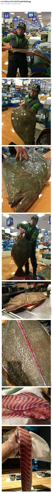

뭔 광어가 아니라 근해의 주인을 잡아왔냐

뭔 광어가 아니라 근해의 주인을 잡아왔냐
삼천포 가서 저거보다 큰 거 봤는데 13만이라더라
이미 배불러서 자세히 안 물어보긴 했는데
킬로당 이겠지?
저거 먹으면 야밤에 거북이가 목따러 옴
용왕산하 정예 암살꼬북이 옴
느낌이 포세이돈의 아들인데..
저게 68만원인건 활 대광어라 그런듯 선어는 아무리커도 10만원 이상 안넘어가더라
4~5키로 이상 대광어는 이상한 물맛에 살도 질기고 맛대갈리 없음
광어는 2.5~3.5키로 대가 제일 맛있음 그리고 완전 철이 아닌 이상 자연산보다는 양식이 더 맛있고 ㅇㅇ
광어 68만원? 걍 병신 호구 잘잡은거임; 자연산 광어는 키로 8천원까지도 떨어짐 당연 양식이 훨씬 비싸고
5킬로 반마리 친구들 모아서 바로 먹었는데 진짜 얇게떠도 껌처렁 질겅거렸음
나흘 숙성하니까 먹을만 하더라
근데 숙성된건 같이 먹을사람 못구해서 다 생선까스 해먹었어
날 추워지는 11월 저녁 3키로 광어 한접시
간장에도 찍고 초장에도 찍고 막창에도 찍고
씻은묵은지에 싸먹고 상추깻잎에도 싸먹고
한점한점 소주한잔 어찌보면 회 맛의 종착지임
엥 광어는 클수록 맛있는거 아니었어?
용왕님 극대노 하실듯
존나크네 ㄷㄷ
존나크다
대광어가 존나 맛도리라는데 ㄷㄷ
68만원이면 싼데..?
궁금한 게 저렇게 크려면 오래 살아야 되는 거고 오래 살았으면은 살이 퍼걱하고. 안 좋을 거 같은데. 왜 생선 큰 게 맛있다고 하는 거야?
무조건 기름임
큰생선은 키로수대비 작은것보다 기름이 차있어서 작은생선에 비해 맛있음
겨울생선이 맛있다는것도 겨울에 에너지비축한다고 지방많아서그런거
아하 고맙요
그냥 20만원치 광어 여러마리사는게 더 살많고 좋지않음???
광어 좋아하는데 빨리 추워졌음 좋겠다